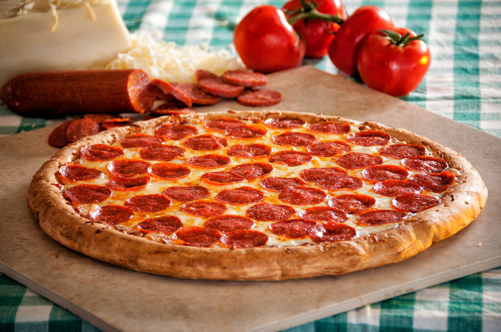
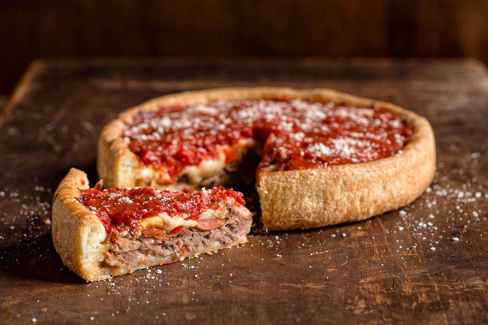

Так как США – страна большая и многонациональная, то и кулинарные пристрастия в каждом регионе свои. В каждом штате свои традиции приготовления данного фаст фуда
Ингредиенты для начинки
Сыр твердый - 150г
Салями - 75г
Томатный соус - 100гр
Орегано - по вкусу
Масло оливковое - для заправки

Пицца Нью-йоркского стиля
Особенность этого варианта – пицца большая в диаметре и чем-то напоминает Маргариту по составу. Основа – твердый сыр или моцарелла, а остальные ингредиенты идут сверху сыра. Ее подают отдельными кусочками как фаст-фуд и, обязательно, едят руками!
1. Подготовленное тесто смазать томатным соусом (чаще всего – это перетертые проваренные томаты с перцем и травами)
2. Сыр натереть на крупной терке и равномерно распределить по диаметру пиццы
3. Салями нарезать тонкими пластинами и разложить поверх сыра. Не забудьте специи!
4. Отправляйте все в духовку на 25 минут при температуре 200°С
5. После того, как блюдо испечется, сбрызните маслом и украсьте свежим базиликом или рукколой
P.S. Американская пицца отличается габаритами во всех отношениях, стандартный диаметр – 45 сантиметров
Ингредиенты для начинки
Сыр твердый - 200г
Мясной фарш - 200г
Томатный соус - 100гр
Лук - 1шт
Болгарский перец - 75гр
Огурцы маринованные - 100гр
Специи по вкусу

Чикаго пицца
Особенность этого рецепта в том, что тесто образует «тарелку» и получается почти пирог. Начинка укладывается слоями, часто это мясной фарш и много овощей. Бортик посыпается сыром, что придает приятную корочку готовой пицце
1. Тесто смазать томатным соусом или кетчупом по всей поверхности
2. Говяжий или куриный фарш обжарить вместе с луком и специями. Можно добавить немного томатов, если фарш немного сухой
3. Нарезаем соленые огурцы, болгарский перец и натираем сыр на крупной терке
4. Все ингредиенты делим пополам – слои будут повторяться
5. В форму из теста укладываем слоями начинку – мясной фарш, сверху перец и огурцы, засыпаем хорошо половиной сыра. Повторяем слои
6. Выпекаем 25-30 минут при температуре 180°С
P.S. Начинка может быть совершенно разной, составляй ее из своих любимых продуктов